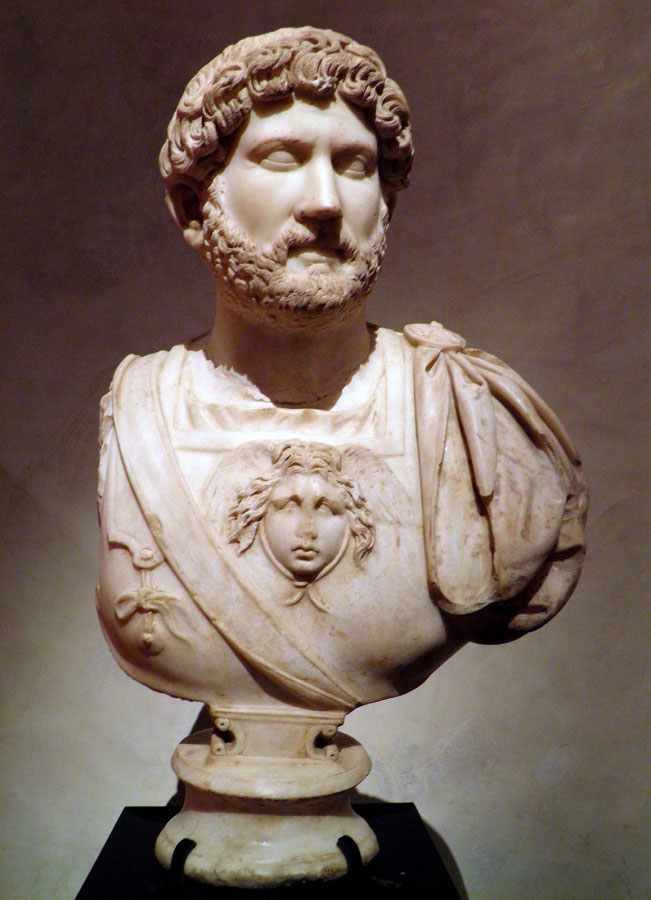

Hadrians's Early Life
Hadrian was born in 76 in Spain to a Senator and his Mother who was part of a distinguished Roman family. He had a single sibling who was his older sister, Paulina. Hadrian's parents died when he was 10 causing him to fall under the guardianship of Trajan and a man named Attianus. During his early years he also developed a love of Greek culture and hunting, his love of Greek culture causing him to get the unkind nickname of "Graeculus" or "Greekling". As a young man he served as a Tribune in three legions, giving him a major advantage in his future political careers, and in the year 101 was elected as quaestor. After serving in Trajan's Dacian wars he served as a Tribune of the Plebs and possibly Praetor as well before serving as a Legate in the first legion. In the year 117 as Trajan passed not long after his Parthian campaign, Hadrian was adopted technically after his death but it was enough to guarantee he would be Emperor next.
Hadrian as Emperor
Hadrian's time as Emperor is marked oddly enough by travel, with him being outside of Rome for more than half of his entire reign. His first trip would have been to Gaul and Germany, and then to Britian where one of the most famous Roman builds still remains, which is Hadrian's Wall. His travel's then took him around the rest of the Empire from Spain to Africa, Asia Minor to the Balkans, before returning to Rome for a few years. After staying in Rome his travels continued much the same route, with stops in Syria, Arabia, Egypt and Judaea. Hadrian would keep his Legion's disciplined, build new impressive works and rebuild others during his time travelling. There isn't too much to say about his Military achievments as unlike Trajan, Hadrian wasn't an expansionist and rather wanted to "lift up" the provinces currently in the empire and keep them safe from all threats, be them internal or external. One thing of note that Hadrian did was he attempted to codify Roman law, albeit in an autocratic form. Most of Hadrians reign, again, is noted for his travel and time outside of Rome but that is not to say he didn't do more interesting things, I would recommend reading on him as well.
Death and Legacy
As he never had a child of his own, Hadrian would end up adopting two children, Lucius Aelius Ceaser and Antoninus Pius, who was the future Emperor. Hadrian passed after an extremely long illness in the year 138, after reigning for 21 years making his reign one of the longest in the history of western Rome. His first adoptive son, Lucius died the same year leaving Antoninus as the only possible heir and choice for Emperor. Again as with any Emperor, views on him have changed over the years but even during his own time he was seen as more autocratic and iron fisted, although what Emperor isn't autocratic?